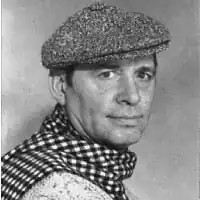

З усіх вісімдесятників Валентин Тарнавський чи не найзагадковіша постать свого покоління. Він завжди тримався осторонь і перебував у затінку літературного процесу. Хоча його творчість дивує і викликає повагу. Якби українська проза пішла за Валентином Тарнавським, то зайняла б таку нішу в сучасній європейській літературі, яку завдяки Патрику Зюскінду і Бернгарду Шлінку сьогодні займає німецька проза.
Скупі біографічні дані про цього письменника зайвий раз засвідчують про його непублічність і відстороненість від тусовок, обойм і літературних кланів.
Валентин Тарнавський народився 9 квітня 1951 року в місті Заставні Чернівецької області. Його батько був редактором районної газети, а мати – бібліотекарем. З дитинства Валентин багато читав і мріяв бути письменником. Знаючи, що журналістика дає можливість проникати в усі шпарини життя, Тарнавський вступає на факультет журналістики Київського державного університету і в 1976 році його закінчує. Але журналістом працював мало. Радянська журналістика була доволі специфічним заняттям, що не мало нічого спільного зі свободою слова. Тож робота в газеті заводу "Комуніст", у журналі "Комуніст України" та газеті "Молодь України" його не захопила. В 1982 Валентин Тарнавський влаштовується у видавництво "Радянський письменник", де працював до 1990 року. Робота провідним редактором відділу прози, спілкування з відомими письменниками і початківцями були тим середовищем, у якому розквітнув талант письменника. Поява в 1983 році книжки повістей і оповідань "Міські мотиви" засвідчила, що в українській літературі з’явився яскравий письменник з досі неіснуючою естетикою. Він перший з українських прозаїків прорвав ідеологічну зашореність соцреалізму, тематичну монотонність епігонів Григора Тютюнника і створив власний стиль національного урбаністичного письма, ставши предтечею інформаційної цивілізації, в якій людина постає жертвою реклами та стереотипів масової свідомості. В 1984 році "Міські мотиви" під назвою "Цвет папороти" були перекладені російською мовою. В 1989 році у видавництві "Радянський письменник" вийшла антологія повістей "Обличчям до вікна" з повістю Валентина Тарнавського "Нуль". А в 1990 році – гостросюжетний фантастичний роман "Порожній п’єдестал", за який письменника удостоїли літературної премії імені Андрія Головка. Всі книжки, включно з останнім романом "Матріополь", що вийшов 2003 року, були написані з 1982 до 1990 року, коли письменник працював на видавничій роботі. У кожного письменника є періоди творчої активності, коли він перебуває у найкращій формі. З 57 прожитих років Тарнавський писав усього вісім років, коли працював у "Радянському письменнику". Після звільнення з видавництва у творчій біографії Валентина Тарнавського розпочався період застою. Тікаючи від творчої кризи, у приміській зоні письменник побудував два будинки і уникав розмов про літературу. До кінця життя він працював над романом "Меценат", який залишився незавершеним, і який не хотів нікому показувати. Як усі літературні самітники, обходив стороною літературні збіговиська, тому навколо нього утворилася стіна мовчання. Про письменника не говорили в літературних колах і не писали критики. Хоча творчість Валентина Тарнавського високо оцінювали в публікаціях Володимир Дрозд, Іван Дзюба, Володимир Яворівський. Письменник помер 30 червня 2008 року. З літературних обойм він випав ще за життя, а після смерті його книжки не перевидавались. Серед недооцінених, загублених, забутих та напівзабутих авторів Валентин Тарнавський найбільше заслуговує на повернення до активного літературного обігу. Його творчість зробила значний вплив на розвиток сучасної української прози. На хвилі бітників він створив нове урбаністичне письмо, що відповідає мисленню людини інформаційної цивілізації. В українській літературі оповідання й повість завжди були конкурентнішими й успішнішими прозовими жанрами за роман. Саме в оповіданнях та повістях українські письменники найчастіше проявляли свій талант. Повісті "Конотопська відьма" Григорія Квітки-Основ’яненка, "Кайдашева сім’я" Івана Нечуя-Левицького, "Тіні забутих предків" Михайла Коцюбинського, "В неділю рано зілля копала" Ольги Кобилянської, "Поза межами болю" Осипа Турянського, "Санаторійна зона" Миколи Хвильового, "Зачарована Десна" Олександра Довженка стали б окрасою будь-якої літератури. Тривалий час повість в Україні виконувала ту ж роль, що роман в інших літературах. Якщо говорити за повісті Валентина Тарнавського "Дисертація" і "Нуль", то вони теж більш вдалі за його романи. Перлиною творчості письменника є повість "Дисертація". За художніми достоїнствами та емоційним впливом – це одна з найкращих повістей за всю історію української літератури. У ній в яскравій художній формі розкривається думка, що цивілізація та соціальні умови виживання зіпсували людину, відірвавши її від первісної природи, яка заклала в людині духовність і чистоту. Чим далі людина віддаляється від своєї природи, тим більше вона себе втрачає. І тому повернення до своєї природності – це повернення до себе, до своєї первісної духовності й чистоти. Сюжет повісті "Дисертація" розвивається за всіма законама гостросюжетного письма. Після відвідин наукової бібліотеки морозного зимового вечора аспірант психології Хома Водянистий повертається на квартиру і в телефонній будці знаходить голу дівчину. Не змігши додзвонитись із автомата до міліції, він заносить непритомну незнайомку додому. Коли вона приходить до тями, то не може згадати ні свого імені, ні звідки вона. Щоб не влипнути в сумнівну історію з дівчиною без імені, яка опинилася на його квартирі, Водянистий залишає її вдома. Незнайомка йому подобається, але Хому шантажує сусідка, і в нього не складаються стосунки з науковим керівником. Дівчина без імені змушує Хому, що писав традиційну для гуманітарія дисертацію, прикриваючи відсутність власних думок цитатами наукових авторитетів, повірити в свої сили і створити оригінальне дослідження, яке зробить переворот у вченому світі. І він у стані незвичайного піднесення пише дисертацію. Перед Водянистим відкривається блискуча наукова кар’єра, тому він вирішує, що незнайомка без імені його обтяжує і завдає зайвих клопотів. Хома збирається вигнати дівчину, але вона сама десь зникає. Проходячи алеєю, наступного дня Водянистий чує, як бабуся показує онуку на молоду тополю, про яку всі думали, що взимку замерзла, але за одну ніч вона ожила. І в цій тополі Хома упізнає свою незнайомку. У повісті використано традиційний фольклорний сюжет про перетворенні дівчини в тополю. Досить згадати українську народну пісні про молоду жінку, яку закляла свекруха: Жала вона жала, Жала вижинала Та й у чистім полі Тополею стала. Так, сюжет, який використав Валентин Тарнавський, традиційний, але його переробка яскрава і талановита. Хіба зменшує достоїнства романів Джеймса Джойса "Улісс" чи Бернгарда Шлінка "Повернення" те, що це художні переробки Гомерової "Одіссеї"? Як і в "Дисертації", центральною в повісті "Нуль" є проблема совісті й моралі. Головний герой повісті "Нуль" Сергій, що працює вчителем математики в містечковій школі, постає перед дилемою: або він заплющує очі на крадіжку відмінника Погрібного-молодшого, батько якого будує нову школу й будинок, де Сергію мають дати квартиру, і одержує омріяне помешкання, або питання про вчинок Погрібного-молодшого виносить на педраду і позбувається перспектив на одержання житла. Як педагог Сергій розуміє, що незупинене зло здатне до розмноження. Сьогодні Погрібний-молодший краде у гардеробі копійки і провокує свого приятеля Стьопку, щоб той відкрутив у міському парку голову лебедю, а завтра він буде керувати великим підприємством чи країною і своїм злом отруїть суспільство. Тому Сергій зупиняє зло в зародку: викриває злочин відмінника Погрібного-молодшого. Від моменту, коли молодий учитель упіймав кишенькового злодія в шкільному гардеробі, до моменту, коли він переміг у собі сумніви, ніби проходить вічність. За цей час Сергій згадує все своє безрадісне минуле: комунальну квартиру, батька-бухгалтера, який виявив розкрадання на взуттєвій фабриці і чесно заявив про це, але в результаті позбувся роботи, його умовно засудили і батько помер від інфаркту. Згадує роботу після армії на будівництві, навчання. Маючи приклад із батькового життя, що помер, так і не добившись правди, Сергій іде на ризик, бо знає, що у великому суспільному механізмі людина залишається нулем, який може або помножувати добро, або помножувати зло. Вся повість – це мить сумнівів, через які в уяві молодого вчителя Сергія проходить усе його минуле й сучасне життя. Після 1991 року, коли Україна здобула незалежність, але не пішла шляхом Чехії або Польщі, в яких основою держави став середній клас, а пішла шляхом державного капіталізму, який скопіювала у недемократичної Росії, де основою держави стали чиновники й олігархи (що, зрештою, традиційно для напівазіатського російського державного устрою), залишається актуальним питання, чому українці, які століттями мріяли про "сім’ю вольну, нову", не створили цивілізованої і демократичної держави. Відповідь на це питання можна знайти у творчості Валентина Тарнавського, який глибоко проаналізував духовну кризу радянського суспільства в час його найбільшого розквіту. Велетенська радянська бюрократична машина, де клас чиновників мав державні привілеї, насправді не була готова створити суспільство рівних можливостей, про яке так любили говорити в Радянському Союзі. Правдиво відтворюючи радянську дійсність, Валентин Тарнавський показує, що справедливості в радянські часи не було. Як і в наш час, тоді були і корупція, і несправедливі суди, і пільги для чиновників, і зв’язки, за допомогою яких можна було все "дістати", і державна монополія на істину. А значна частина радянського суспільства була вражена міщанством з його культом речей. У країні, де дефіцитом були якісний одяг і продукти харчування, книжки і музика, автомобілі й житло, люди всю свою енергію спрямовували на те, щоб роздобути омріяні дефіцити. І коли розвалився Радянський Союз і його український уламок почав будувати нову країну, вчорашні чиновники, що мали державні пільги і зневажливо ставилися до народу, присвоїли собі заводи, фабрики і всю незалежну українську державу, перенісши в молоду державу радянську філософію з її зневагою до людини.